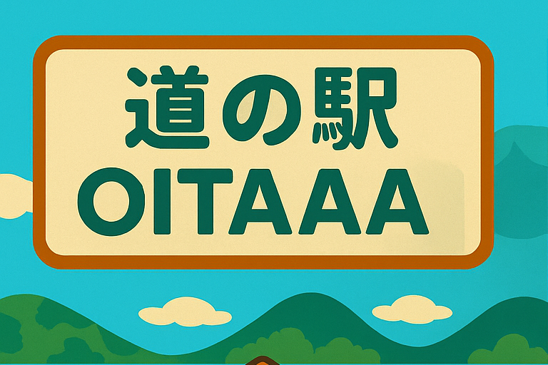

🏠 施設紹介

広々とした駐車場、清潔なトイレ、休憩スペースも完備♪ 地元特産品が並ぶ直売所も大人気!！
🍙 特産グルメ 🥢
人気の「豆乳ソフト」や地元の野菜ももたっぷり「だんご汁」はここでしか味わえない味！
🎉 イベント情報 🎪
週末は地元マルシェやモノ作り体験など、ファミリーで楽しめるイベントが盛りだくさん！
🗺 アクセス 🐾

Oitaa ICから車で5分。JR Oitaa駅から車で約10分です。広々した駐車場にEV充電も完備！
～ゆったり、のんびり、ほっこり～
広々とした駐車場、清潔なトイレ、休憩スペースも完備♪ 地元特産品が並ぶ直売所も大人気!！
人気の「豆乳ソフト」や地元の野菜ももたっぷり「だんご汁」はここでしか味わえない味！
週末は地元マルシェやモノ作り体験など、ファミリーで楽しめるイベントが盛りだくさん！
Oitaa ICから車で5分。JR Oitaa駅から車で約10分です。広々した駐車場にEV充電も完備！